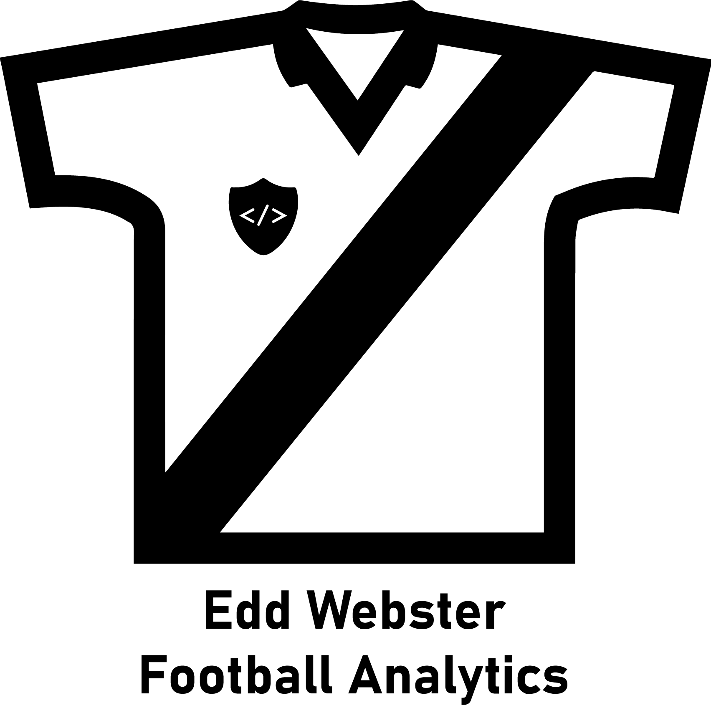

Hi, I'm Edd.
As a Data Scientist with five years of professional experience, my job is to help organisations reduce their time to insight through a data-driven approach.
After graduating in 2016 from Queen Mary University of London with an MSci degree in Chemistry, I have worked as a Data Scientist for a number of best-in-class organisations including the LEGO Group, Analytics FC, West Ham United Football Club, and City Football Group. I now work as the Lead Data Scientist for the First Team at Leicester City Football Club, helping to drive the delivery of data-driven insights for performance analysis, player recruitment, sports science, and medical aspects of the club's operation.
My professional interests include football analytics, applied data science, machine learning, and data visualisation. In my free time, I maintain a football_analytics GitHub repository of open source analysis, that includes projects for model building including xG models; working with tracking data including the application of pitch control models; the application of action value frameworks including xT, and VAEP; and creating football intelligence reporting tools using Tableau. This repository also includes a curated list of publicly available resources such as blog posts, libaries, and the latest academic literature, to help people get started with football analytics.
Full details of my previous experience and publicly available analysis can be found on my profiles for LinkedIn, GitHub, Tableau Public, as well as my CV, Football Data Science portfolio, and the following article by Training Ground Guru that discusses my thoughts and experience regarding football analytics and data science.
Experience
Professional experience in the following areas of data science and football data analysis.
Data
Processing
Data mining, parsing, cleaning, engineering, and exploration, to create professional, reproducible data analysis.
+Data
Science
Application of machine learning and statistical techniques to data, to determine trends and underlying patterns.
+Football
Analytics
Domain knowledge of football industry datasets and common analytical techniques.
+Technical Expertise
Technical expertise of the following flagship data science languages and tools.
Portfolio
A selection of publicly available analysis that I have commited to GitHub and Tableau Public.
Contact
Get in touch via edd.j.webster@gmail.com or @eddwebster.
If you would like to follow my open source work, I can also be found on GitHub and Tableau Public.